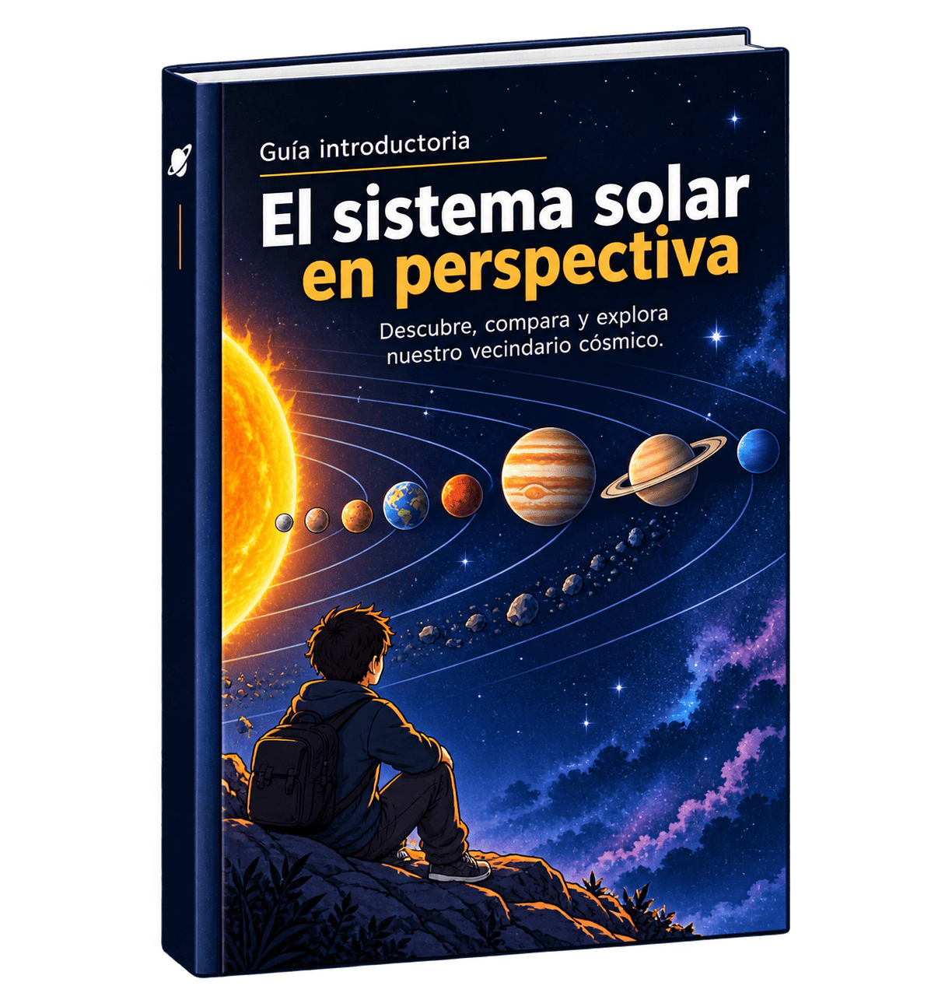

Mateo Ríos
Estudio el universo y comparto lo que voy aprendiendo. Astronomía, exploración espacial y fotografía del cielo para mentes curiosas
Contenido destacado
Guías para empezar



Estudio el universo y comparto lo que voy aprendiendo. Astronomía, exploración espacial y fotografía del cielo para mentes curiosas
